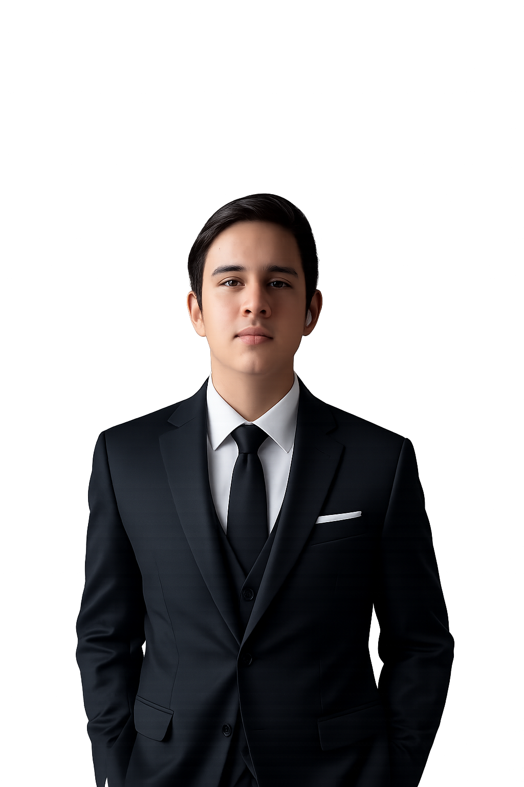

Bienvenido a mi portafolio personal. Aquí encontrarás información sobre mis habilidades, estudios, proyectos y sueños de manera general.
Sobre Mí
Kevin Alexander Hernández Sierra
Me llamo Kevin Alexander Hernández Sierra, tengo 18 años y soy estudiante de programación. Soy una persona que disfruta aprendiendo nuevas tecnologías, resolviendo problemas y creando soluciones innovadoras. También me gusta adquirir conocimientos variados relacionados con las ciencias de manera general y autodidacta.

Conocimientos
Hablando de conocimientos, en los técnicos, tengo experiencia en HTML, CSS, JavaScript, Python, Git y GitHub. Actualmente estoy intentando aprender nuevas tecnologías y nuevos lenguajes para integrar a mis conocimientos y mejorar mis habilidades en programación. También me gusta adquirir conocimientos en áreas relacionadas con las ciencias de manera autodidacta, y también me gustaría estudiar de manera formal en un futuro para poder integrar esos conocimientos de ciencias dentro de mis proyectos de programación.
Estudios
Aquí encontrarás información sobre mi trayectoria educativa, desde la educación primaria hasta la educación superior.
Da click sobre cada columna para ver más detalles.
Educación Primaria
Colegio Bethel (Yopal)
2013 - 2018
En este colegio inicié mi formación académica primaria. Estudié desde el grado primero hasta el grado sexto.
Educación Secundaria
Institución Educativa Manuela Beltrán (Yopal)
2019 - 2023
En este colegio cursé mis estudios de bachillerato, desde el grado séptimo hasta el grado undécimo.
Educación Técnica
Institución Educativa Manuela Beltrán (Yopal) en asociación con el SENA
2021 - 2023
En este programa de formación media técnica adquirí conocimientos en contabilidad, mientras cursaba mis estudios de bachillerato.
Educación Tecnóloga
Centro Agroindustrial de Formación Empresarial de Casanare - CAFEC (SENA)
2025 - En curso
Estoy cursando el programa de formación tecnológica de Análisis y Desarrollo de Software.
Habilidades
Aquí encontrarás mis habilidades técnicas, blandas y de comunicación.
Habilidades Técnicas
 HTML
HTML
Tengo conocimientos en estructura de páginas web con HTML, incluyendo semántica, estructura de contenido y manejo de etiquetas.
 CSS
CSS
Tengo conocimientos en diseño responsivo, Flexbox, Grid y creación de interfaces modernas.
 JavaScript
JavaScript
Tengo conocimientos básicos en JavaScript, me encuentro actualmente aprendiendo y mejorando mis habilidades en este lenguaje de programación.
 Python
Python
Tengo conocimientos medianamente avanzados en Python, he trabajado en varios proyectos académicos utilizando este lenguaje de programación, y suele ser bastante cómodo y intuitivo al momento de trabajar.

 Git y GitHub
Git y GitHub
Tengo conocimientos en diseño responsivo, Flexbox, Grid y creación de interfaces modernas.
Habilidades Blandas
Tengo habilidades blandas como la comunicación efectiva, el trabajo en equipo, la adaptabilidad, la resolución de problemas y la gestión del tiempo. Estas habilidades me permiten colaborar de manera eficiente con otros, adaptarme a diferentes situaciones y resolver desafíos de manera efectiva.
Habilidades de Comunicación
Me considero una persona comunicativa, capaz de expresar ideas de manera clara y efectiva. Tengo habilidades para escuchar activamente, lo que me permite comprender mejor las necesidades de los demás y responder de forma adecuada. Además, soy capaz de adaptar mi estilo de comunicación según el contexto y la audiencia.
Proyectos
Actuamente no tengo proyectos en desarrollo, pero tengo planes para crear algunos en el futuro cercano.
Hobbies
En mis tiempos libres, disfruto de actividades variadas. Aquí están algunas de las que más suelo practicar:
Me gusta capturar momentos especiales y paisajes hermosos con mi dispositivo. También he trabajado como camarógrafo y editor de video de manera independiente.
Me encanta aprender cosas nuevas, especialmente relacionadas con la tecnología, las ciencias y la programación, incluyendo aplicaciones.
- Estoy en proceso para el aprendizaje de programas de CFD.
- Estoy aprendiendo de manera independiente sobre el uso de materiales avanzados, tales como la fibra de carbono.
Disfruto jugar videojuegos, especialmente aquellos que tienen una buena historia y gráficos impresionantes.
- Mis géneros favoritos son los juegos de acción, aventura y rol.
- Algunos de mis juegos favoritos incluyen Fortnite, F1 24, Flight Simulator, Minecraft, Arma, entre muchos otros.
Me gusta practicar deportes como el fútbol y el voleibol para mantenerme activo y saludable.
Sueños
Tengo muchos sueños, tantos que hasta sueño despierto.
Bienvevido(a), a mi sección más personal.
Mi sueño como ser humano es apoyar en el desarrollo de tecnologías que mejoren la vida de las personas. Cada día es una oportunidad para mejorar, no solo personalmente, también colectivamente.
Mi sueño más grande es ver en un futuro próximo a un mejor planeta, a una mejor sociedad, donde todos y cada uno de nosotros podamos convivir en paz y tranquilidad. Mi proyecto más deseado es, en un futuro lo más cercano posible, es poder ayudar a la gente para impulsar sus vidas, sus proyectos, y sus ideas, para que ellos contribuyan al mundo. Mi sueño y mi gusto más grande es que el mundo sea un lugar mejor para todos.
Quiero contribuir y liderar el desarollo tecnológico de la región Latinoamericana, con el fin de volver a nuestros países, principalmente Colombia, en potencias tecnológicas de primer nivel, capaces de innovar día a día para el beneficio de la humanidad en general.
Mi objetivo es liderar el desarrollo aeroespacial dentro del territorio nacional, para impulsar la generación de empleo, la sostenibilidad de nuestro país, y para impulsar y ser líderes y pioneros en el desarrollo espacial, para alcanzar la vida interplanetaria.
Contacto
Puedes contactarme a través de mi correo electrónico: khernandezsierra895@gmail.com